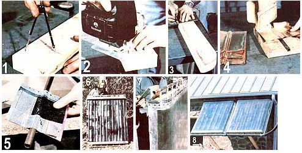
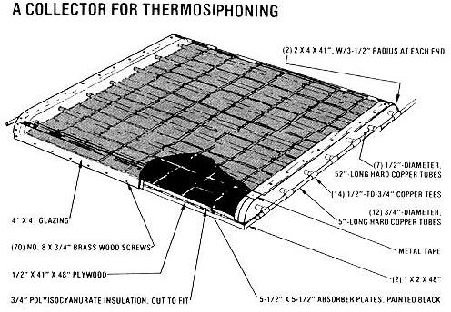

If the modern solar water heater seems too costly and complex, give some thought to . . .
In our technologically advanced country, it's all too easy to get in the habit of assuming that complicated solutions to problems are more thorough and, therefore, somehow superior to simpler approaches. Take the usual attempts to capture energy from the sun, for example: A typical commercial solar domestic hot water system hasIf the modern solar water heater seems too costly and complex, give some thouaht to . . . as a minimumIf the modern solar water heater seems too costly and complex, give some thouaht to . . . a pump, several collectors, a maze of plumbing, numerous temperature probes, and a differential thermostat.
But, you may well wonder, are all those components really necessary? Well, as we recently found out, it's entirely possible to build an effective solar water heater that doesn't require a single watt of electricity to get its liquid from one place to another.
MOM's water-heating setup circulates through the courtesy of an everyday physical phenomenon: Heated fluids rise because their lower density (in comparison to the same substances when they're cooler) reduces the influence of the force of gravity per unit of volume. Hence, circulation occurs when cold water in the system falls from the storage tank (which sits about two feet above the top of the collectors) . . . at the same time, water inside the suncatchers is heated and tends to rise . .. back toward the storage tank. The imbalance in densities (and therefore in gravitational attraction) forms a complete convective loop.
Because the "pump" of the thermosiphon setup is the heat of the sun itself, the intensity of that radiation regulates the volume of flow through the pipes. In fact, when the sun stops shining on the collectors, the system is effectively shut off.
However, though the concept of thermosiphoning is elegantly simple, there are a few basic rules to follow when designing such a collector.
First, the convective loop will work properly only if the bottom of the storage tank is at least a foot and a half above the top of the collector. This head is necessary to build pressure in the system and to help prevent back-flow at night. [EDITOR'S NOTE: Steve Baer's companyIf the modern solar water heater seems too costly and complex, give some thouaht to . . . Zomeworks, Dept. TMEN, P.O. Box 712, Albuquerque, New Mexico 87103-recently introduced a convection check valve that allows the collector top to be posi tioned as high as the top of the storage tank and the bottom of the collector as high as the bottom of the storage tank. The device is profiled in MOM's Market place, on page 146.]
Furthermore, the connections to the storage tank need to be properly located in a convective-loop solar hot water setup. The cold line to the collectors should exit at the bottom of the tank, and the hot return must enter near the top. The cold line, however, shouldn't be placed in such a way that its effective head will be less than that of the hot water return.
Because thermosiphon systems rely on (relatively) weak convective forces to provide their circulation, they need to be built with generously sized tubing to reduce pipe friction. Depending on the distance between the collector and the storage tank, then, the pipes should be at least 3/4" in diameter, and 1 " would be preferable. (All pipes must be thoroughly and equally insulated.) In addition, the feed and return lines should be pitched evenly from the collector to the tank (without any significant dips that could catch air bubbles).
Finally, if you're going to construct collectors similar to the ones shown here, either the units should have their headers built in at a slight angle, or the entire collector must be tilted (about 5° of rise toward the hot water outlet side should work out well).
|
 [1] Set your compass for the width of the 2 X 4 (about 3-1/2"") and scribe an arc that goes from one corner of the board to the edge. [2] Trim the wood along the line with a saber (or coping) saw. [3] Mark off the 1/2""holes on 5-7/8""centers. [4] Press a groove into the fins (this photo shows the copper version). [5J The aluminum plates are sandwiched around the tubes and stapled. (6] A completed absorber plate assembly is ready for glazing. [7] Hinges allow us to adjust our collectors for sun angle. [8] Cold water enters at the bottom right, while solarheated fluid exits from the top left side of the mounted collector array. |
 |
|